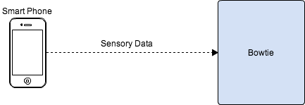

Smart Phone Sensory Data Collector with HTML5 and Javascript
Recently, well kind of (in May)... Me and my friend Alex Waller were in the Student Union at St. Andrews Unviersity. Where we met up to try and see if anyone was interested in starting a new Hack Space within St. Andrews, but no one turned up.
Despite the dissappointing turn out, we found we both have a common interest, robotics. It wasn't long before Alex came up with the idea of using a smart phone as a sensory device for a robot, seeing that it has a gyroscope, accelerometer, GPS, video, and audio recording capabilities. Building dedicated sensory with the same capability is both hard and time consuming, that is what is so great about this idea.

The additional layer of cool-ness is that I came across the new HTML5 spec, and saw it was very achievable to obtain all that data without asking the user to install any software on the smart phone, all the user had to do was visit a web page, which can in turn obtain the data through HTML5 and Javascript and transmit the data to a server.
Over the summer holiday, with the effort of Alex, Alexy and me we have created Bowtie, a smart phone data collector written in Go-lang. While I don't really like Go, the technology used isn't important here*, what is interesting is how this new smart phone data collector concept can be used beyond the scope of robotics. What I envision is this technology can potentially be of vital use in emergency situations, where information and data is what helps keep people alive. It can be used as a CrowdSourcing technology to help analyze situations in double time, and all they have to do is visit web page. Or many other situations where phones can be used to collect all kinds and types of data to analyze a particular situation.
Check out our cool project Bowtie! :)
*Alex, I know . . . its cool and awesome in many ways :P